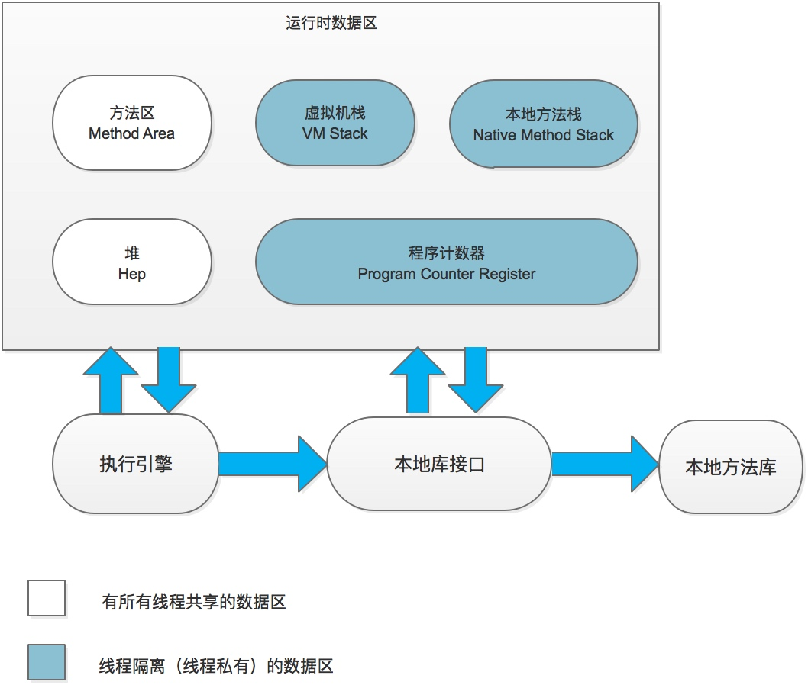

Java内存区域

Java程序运行时会将其管理的内存换分为几个区域，如图所示。
线程私有内存
程序计数器
程序计数器是一块较小的内存区域，记录了当前线程执行的字节码行数指示器。由于JVM的多线程是通过线程轮流切换并分配处理器时间片的方式来实现的，同一时间一个处理器核只能执行一个线程中的指令，因此为了线程切换以后能恢复到正确的位置执行，因此每个线程需要有一个独立的程序计数器。
如果线程执行的是Java方法，程序计数器中存储的是虚拟机字节码指令的地址；如果执行的是Native方法，程序计数器值为空(Undefined)。这块区域是唯一一块Java虚拟机规范中没有规定任何OutOfMemoryError的区域。
虚拟机栈
虚拟机栈生命周期与线程相同。虚拟机栈描述的是Java方法执行的内存模型，每个方法在执行时都会创建一个栈帧(Stack frame)用于存储局部变量表、操作数栈、动态链接、方法出口等信息，一个方法从调用到执行完成的过程，对应着一个栈帧在虚拟机栈中入栈、出栈的过程。
局部变量表存储了编译期间可知的基本数据类型、对象引用类型、returnAddress类型(出口地址，指向了一个字节码指令的地址)。其中64位的long和dubbo类型的数据会占用两个局部变量空间(slot)，其他类型的数据只占用1个。局部变量表所需的内存空间在编译期间分配完成，当进入一个方法时，这个方法所需的局部变量表空间是完全确定的，方法执行过程中不会发生变化。
Java虚拟机规范中关于该区域规定了两种异常情况：1.如果线程请求的栈深度大于虚拟机所允许的深度，会抛出StackOverflowError异常(如递归层数过大)；2.如果虚拟机栈支持动态扩展，而扩展时无法申请到足够的内存时会抛出OutOfMemoryError异常。
HotSpot虚拟机中关于虚拟机栈的配置
-Xss 每个线程的栈大小 jdk5以后每个线程堆栈的默认大小为1M，之前为256k。操作系统对一个进程里的线程数有限制，经验值在3000~5000。小的应用如果栈不是很深，应该128k够用了，稍大的应用建议设置成256k，这个选项对性能影响比较大，需要进行严格的测试
-XX:ThreadStackSize 线程的栈的深度 (0 means use default stack size) [Linux amd64: 1024 (was 0 in 5.0 and earlier); all others 0.]
本地方法栈
本地方法栈功能与虚拟机栈相似，只是用于虚拟机调用Native方法。一些虚拟机(如hotSpot)将本地方法栈和虚拟机方法栈合二为一。与虚拟机栈一样，该区域抛出StackOverflowError和OutOfMemoryError两种异常。
所有线程共享数据区
Java堆
Java堆是虚拟机所管理内存中最大的一块，此区域唯一的目的就是存放对象实例，几乎所有对象都在堆上分配内存。
Java堆是垃圾收集器管理的主要区域，因此很多时候也被称为“GC堆”。现在收集器基本都采用分代收集算法，所以Java堆中还可以细分为：新生代和年老代；再细分一点有Eden、From Survivor、To Survivor空间。从内存分配的角度，线程共享的Java堆中可能划分出多个线程私有的分配缓冲区。
根据Java虚拟机规范的规定，Java堆可以处于物理上不连续的内存空间中，只要逻辑上是连续的即可。实现上堆空间可以是固定的，也可以是动态扩展的。实际上主流的虚拟机都是可以扩展的（通过-Xmx和-Xms控制）。如果在堆中没有足够内存完成实例分配，且堆也无法完成扩展，将会抛出OutOfMemoryError。
方法区
方法区(Method Area)用于存储已经被虚拟机加载的类信息、常量、静态变量、及时编译器(JIT)编译后的代码等数据。另外一个别名叫做Non-heap。
HotSpot中曾经使用永久代来实现方法区，在永久代中使用分代收集器回收内存。1.7之前的永久代中还存储了常量池中的字符串对象，导致了一系列的性能问题和内存移除错误。1.7版本中将符号常量移动到Native Heap，将字符串常量移动到Java Heap。1.8版本取消了永久代，将数据区域转移到了一块与堆无关的本地内存区域即元空间(Metaspace VM for metadata)。
1.7 and earlier永久代配置 -XX:MaxPermSize 32位机器默认配置为64M 64位机器默认配置为85M。
该区域会抛出OutOfMemoryError。
运行时常量池
- 运行时常量池为方法区的一部分。
- 用于存储Class文件编译期间生成的各种字面量和符号引用，除此之外还会把翻译出来的直接引用也存储在运行时常量池中。
- Java虚拟机对Class文件的每一个部分的格式都有严格的规定，每一个字节用于存储那种数据都必须符合规范上的要求才会被虚拟机认可、装载和执行。
- 运行时常量池相对于Class文件的常量池的另外一个重要特征是具有动态性，Java语言并不要求变量一定只有编译期才能产生，也就是说并非只有Class文件中的常量池的内容才能进入运行时常量池，运行时也可以将新的常量放入池中，这个特性利用较多的是String.intern()方法。
- 该区域会抛出OutOfMemoryError。
直接内存
- 直接内存(Direct Memory)并不是虚拟机运行时数据区的一部分，也并不是Java虚拟机规范中定义的内存区域
- JDK1.4中加入了NIO，引入了一种基于通道与缓冲区的I/O方式，它可以使用Native函数库直接分配堆外内存，然后通过一个存储在Java堆中的DirectByteBuffer对象作为对这块内存的引用进行操作。这样避免了数据在Java Heap和Native Heap中来回复制数据，提高了性能。
- 直接内存不受Java堆大小的限制，直接内存加其他区域内存综合大于物理内存限制时会发生OutOfMemoryError